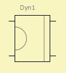
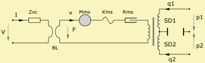

Elec-Dyn Driver
| Home | LE-Part | Electro-acoustic |
 |
 |
 |
Parameters
| Caption | String | Name of component |
| Formula | String | Formula of parameters |
| Diaph front | Ref or size | Diaphragm size of front side |
| Diaph rear | Ref or size | Diaphragm size of rear side |
| Mms | kg | Mass of vibrating assembly |
| Kms | N/m | Total stiffness of suspensions |
| Rms | Ns/m | Mechanic resistance |
| fs | Hz | Fundamental Resonance |
| Qms | Mechanical Quality Factor | |
| Creep | Factor of creep-formula | |
| Re | Ω | Voice coil resistance at DC. |
| BL | N/A | Force Factor of motor. |
| Qes | Electrical Quality Factor. | |
| VC | HF voice coil parameters. |
The Elec-Dyn Driver is a lumped element four-pole-component featuring an electro-acoustic transducer with an electro dynamic motor. The model follows the work presented by Thiele and Small, see [33, 34].
The port to the left is of the electric domain. The marked connection indicates that the excursion is in phase with the electrical signal.
The port on the right hand side is driving the acoustic domain. The acoustic port is special because one terminal stands for the front side of the diaphragm and the other terminal for the rear. In practice this means that we connect to node u any acoustic component which shares the sound pressure at the front of the diaphragm. To node v we connect acoustic components which have the same pressure at the rear.
See also
LE Diaphragm Derivation, LE Electro-Dyn-Model, LE Electro-Dyn-Qts
Formula
The name of the parameters are equal to the formula-identifiers:
|
| ||||||||||||||||
Example
.jpg) |
%20-%20BEM.jpg) |
The example displays the model of two speakers in a vented enclosure. In this example we assume that the exterior radiation is modeled with the help of BEM and the interior by LEM.
To the left of the transducers there is the electrical domain, to the right is the acoustic domain. The mechanical domain is encapsulated inside the transducer. At the very left we have a voltage source. In this example the source is wired to a generator resistance Rg. The two transducers are wired in series. In the acoustic domain the front side of the membrane is connected to a Radiator. For the network the Radiator is a radiation impedance. Because we have several radiating components AKABAK installs also elements which take care of mutual radiation [9]. However, this is done internally and not shown in the schematic. The acoustics at the rear of the diaphragms is modeled with the help of the LEM. We assume same sound pressure inside the cabinet. Hence the rear side of the membranes are connected to a vented enclosure component. This component comprises a volume, a vent and a radiator.